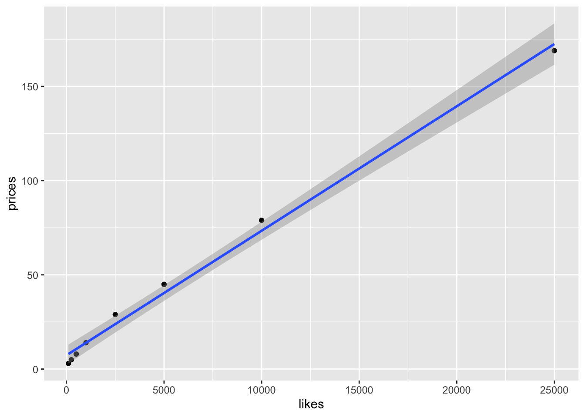
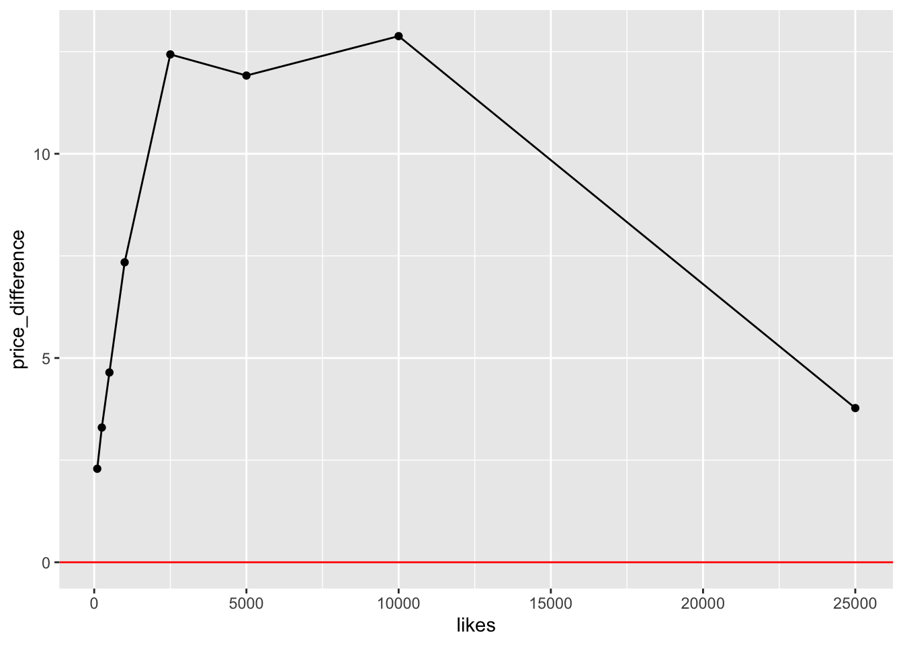
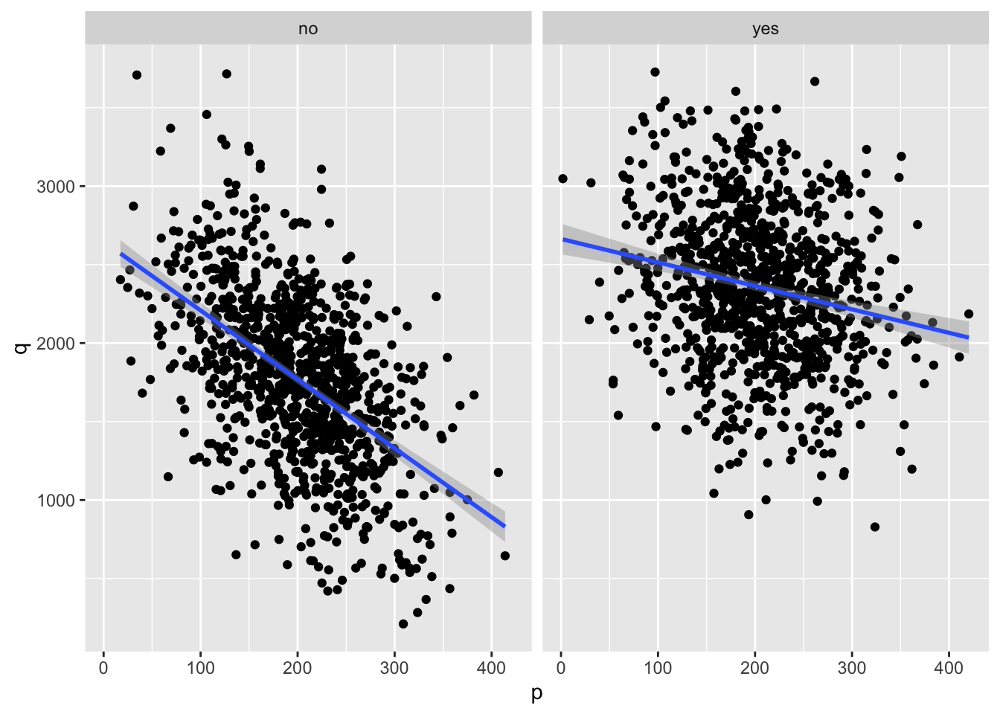

Code
library(tidyverse)
library(sjPlot)This is a completed problem set from Suffolk University, Managerical Economics Course.
Make sure you run this chunk before attempting any of the problems.
Famoid sells social media likes to individuals interested in careers as influencers. (The company claims they sell accounts from real people, but they could be bots. They company also sells followers and other social media products.)
How does their pricing strategy work? Let’s investigate. I grabbed their prices (in USD) and follower data from their website: https://famoid.com/buy-instagram-likes/. Each bundle of likes appears to be identical (“High Quality Likes! All Real and Active!”) except for the number of likes.

It is a Supply curve
\[ \text{price} = \beta_0 + \beta_1 \text{likes} + \epsilon \]
Call:
lm(formula = prices ~ likes, data = .)
Residuals:
Min 1Q Median 3Q Max
-5.035 -3.662 -1.330 4.721 5.559
Coefficients:
Estimate Std. Error t value Pr(>|t|)
(Intercept) 7.3246039 2.0732613 3.533 0.0123 *
likes 0.0066066 0.0002131 31.009 7.47e-08 ***
---
Signif. codes: 0 '***' 0.001 '**' 0.01 '*' 0.05 '.' 0.1 ' ' 1
Residual standard error: 4.819 on 6 degrees of freedom
Multiple R-squared: 0.9938, Adjusted R-squared: 0.9928
F-statistic: 961.6 on 1 and 6 DF, p-value: 7.469e-08The beta1 coefficient is positive, so as the number of likes increases, the price also increases.
Adding a variable to called “predicted_prices” that calculates the predicted price for each level of followers based on your estimates. I assume the intercept is zero.
Plotting the price differences across likes.

We can observe that the difference between the price charged and the estimated price increases rapidly up to 2,500 likes, remains relatively steady from 2,500 to 10,000 likes, and drops significantly for 25,000 likes. It might be that this reflects the buyers’ different willingness to pay for different amount of fake likes. While more likes boosts a buyer’s appearence as someone popular, which increases the probability of real people starting following their account and advertisers seeking paid collaboration, too much fake likes may contrast with the reality so much that the potential subscribers and advertisers would spot the lie. Thus, paying a higher price for a big number of likes might not pay off. That is why the buyers’ willingness to pay increases with each additional like initially but starts stagnating at some point before dropping. This might be the reason why Famoid changes its addition to the estimated prices over different numbers of likes.
JetBlue data:
with the following variables:
q: average quantity soldp: average pricepc: average competitor pricey: average consumer income indexmonday: did a flight leave on a Monday?Plotting the demand curve irrespective of which day a flight left.
Plotting the demand against the competitor’s price.
As the competitor price increases, our average quantity sold increases, too. That means consumers are price-sensitive and lowering the price relative to the pc can increase demand.
Estimating the parameters of the demand curve and checking the hypothesis tests.
\[ Q(P) = \beta_0 + \beta_1P + \beta_2P_C + \beta_3Y + \epsilon \]
Call:
lm(formula = q ~ p + pc + y, data = .)
Residuals:
Min 1Q Median 3Q Max
-594.93 -295.00 -80.84 296.17 544.09
Coefficients:
Estimate Std. Error t value Pr(>|t|)
(Intercept) 585.95749 141.75139 4.134 3.72e-05 ***
p -2.72215 0.10527 -25.860 < 2e-16 ***
pc 5.34192 0.07722 69.179 < 2e-16 ***
y 1.60687 1.37463 1.169 0.243
---
Signif. codes: 0 '***' 0.001 '**' 0.01 '*' 0.05 '.' 0.1 ' ' 1
Residual standard error: 306 on 1996 degrees of freedom
Multiple R-squared: 0.734, Adjusted R-squared: 0.7336
F-statistic: 1836 on 3 and 1996 DF, p-value: < 2.2e-16We can see that as the p increases the average quantity sold (q) decreases. As the competitor’s price increases the q increases, too. The increase in y also increases the q, though the significance is quite low.
This is also a pure-selling problem, which is a situation when supply of a good or service incurres no noticable variable costs. That is, once a flight is scheduled an additional passenger to a not-filled plane does not imply an additional cost.
Calculating average income and average competitor’s price.
Writing a function called revenue_pooled that calculates JetBlue’s revenue for a given price.
Plotting over the range of prices.
Finding the optimal price using numerical optimization.
$maximum
[1] 479.2699
$objective
[1] 625276.8Checking the first-order condition.
[1] 0Confirming the elasticity of demand is unitary elastic at the optimal point.
\[ \begin{aligned} E_p &= \frac{\text{\% change in Q}}{\text{\% change in P}} \\ &= \frac{(Q_1 - Q_0)/Q_0}{(P_1 - P_0)/P_0} \\ &= \frac{dQ/Q}{dP/P} \\ &= \frac{dQ}{dP}\frac{P}{Q} \\ &= \beta_1\frac{P}{Q} \\ &= -2.72215\frac{479.2699}{Q} \\ \\ Q &= 585.95749-2.72215*479.2699+ 5.34192*mean_{pc} + 1.60687*mean_y \end{aligned} \]
Confirming the optimal price analytically.
\[ \begin{aligned} f(x) &= (\beta_0 + \beta_1P + \beta_2P^C_{mean} + \beta_3Y_{mean})P \\ f'(x) &= \beta_0 + 2\beta_1P + \beta_2P^C_{mean} + \beta_3Y_{mean} \\ f'(x) &= 585.95749 - 2.72215*2P + 5.34192*348.6827 + 1.60687*100.0058 \\ 0 &= 2609.289 - 2.72215*2P \\ 2609.289 &= 5.4443P \\ P &= \frac{2609.289}{5.4443} \\ P^* &= 479.2699 \end{aligned} \]
We ignored the fact that the demand differes on different days of the week. It is important because it gives us an opportunity to implement price discrimination, that is to sell the same product for a higher price. It would allow the firm to increase profits without changing the quantity sold or produced.

The supply curve for Monday flights is flatter, indicating that on Mondays the quantity sold does not decrease as dramatically as on other days when we increase prices. It means that the demand on Monday is more inelastic.
\[ Q(P) = \beta_0 + \beta_1P + \beta_2P_C + \beta_3Y + \beta_4M + \beta_5(P\times M) + \epsilon \] Beta4 is the change in the intercept and beta5 is the change in the slope. The M variable indicates whether the flight leaves on Monday or not. When a flight is not on Monday, M equals 0, which removes beta4 and beta5 from the function. When the flight is on Monday, though, M equals 1, which means beta4 remains and can be added to beta0, the intercept of the function. The sum of beta0 and beta4 would be a new intercept adjusted to the demand on Mondays. Beta5 times P can be added to beta1 times P, where beta1 is the slope. The sum of those betas would give a new slope of the function.
Call:
lm(formula = q ~ p + pc + y + monday + monday * p, data = .)
Residuals:
Min 1Q Median 3Q Max
-39.075 -7.045 -0.043 6.941 37.838
Coefficients:
Estimate Std. Error t value Pr(>|t|)
(Intercept) 466.213996 4.787713 97.38 <2e-16 ***
p -4.118354 0.004971 -828.40 <2e-16 ***
pc 5.272149 0.002581 2043.02 <2e-16 ***
y 2.938113 0.045933 63.97 <2e-16 ***
mondayyes 74.444233 1.492684 49.87 <2e-16 ***
p:mondayyes 2.547381 0.007038 361.96 <2e-16 ***
---
Signif. codes: 0 '***' 0.001 '**' 0.01 '*' 0.05 '.' 0.1 ' ' 1
Residual standard error: 10.22 on 1994 degrees of freedom
Multiple R-squared: 0.9997, Adjusted R-squared: 0.9997
F-statistic: 1.344e+06 on 5 and 1994 DF, p-value: < 2.2e-16The intercept of the demand curve for flights that leave on Monday.
The slope of the demand curve for flights that leave on Monday.
Plotting the estimated demand curves.
We can see that the demand for tickets on Monday increases and is more inelastic.
Finding the optimal price for Monday flights.
$maximum
[1] 850.681
$objective
[1] 1136847Finding the optimal price for non-Monday flights.
$maximum
[1] 315.4597
$objective
[1] 409837.3Price discrimnation increased total revenue. This happens because, as we have seen earlier, the demand is more inelastic and generally larger on Mondays than on other days.
(The following questions pertain to the reading “BIG DATA AND DIFFERENTIAL PRICING” released by the White House in 2015 and posted in Blackboard.)
[Q1] [WRITE] What is the difference between first and third degree price discrimination? Use examples not found in the reading.
First degree price discrimination refers to personalized pricing, that is the price charged varies with every buyer. An example of that would be bazars (losely regulated, open-air areas with many small sellers and shops) in Kazakhstan and more. The price a consumer would have to pay would depend on their personal connection with the seller, negotiating skills, and whether the buyer looks financially secure. Third degree price discrimination is a situation when different demographic groups are charged different prices. For example, taxi drivers in Kazakhstan charge foreigners higher prices, exploiting tourists’ unawareness of the usual prices. Another example would be a discount for females at night clubs’ entries.
[Q2] [WRITE] What are the four challenges a firm faces when trying to price discriminate.
First challenge is that sellers must figure out customers’ willingness to pay. A second challenge is the fact that competition would limit a company’s ability to raise prices, because customers may find a cheaper alternative, even though they are willing to pay more. Third, companies need to prevent resale by customers who would try to speculate and exploit price differences. Forth, charging different prices to different people for the same product might alienate customers to whom it would seem unfair.
[Q3] [WRITE] What are some tradeoffs to price discrimination (i.e., what are some benefits and costs)? Use examples.
The main benefit is that when companies have some market power, differential pricing can expand the size of the market. For example, airlines can offer an empty business class seat for a smaller extra charge right before you enter the plane. This allows more people to afford a business class and extra profit for the company, in contrast to an empty business class seat.
One of the costs of differential pricing might be that it can produce incentives to inefficiently degrade product quality. A rather harmless example of that can be Netflix’s different subscription plans, where the less you pay, the less features you can enjoy. A more dangerous example can be a degraded quality of a medicine. That is, the lower is the price, the less enriched is the chemical constitution or overall quality.
Another concern is that it might increase inequality through transfering value form consumers to shareholders, especially if there is no or little competition and the demand is inelastic.
[Q4] [WRITE] What is a “cookie” (not the edible kind) and how it can be used for pricing?
A cookie is a small text file that a website places on a user’s computer. This file allows websites to learn varous data about consumers, track them across multiple sites, and thus implement targeted advertising.
[Q5] [WRITE] Discuss four ways in which firms “explore the demand curve”.
First, a firm can conduct “A/B test”, randomly assigning customers to one of two price conditions.
Second way is to charge different prices in different locations.
Third, firms can charge different prices for the same product on an Internet marketplace.
Forth, firms can charge different prices over brief time intervals.
[Q6] [WRITE] In what ways does the internet make price discrimination harder? Think of an example.
Internet allows users to compare different suppliers’ prices more efficiently and find a more affordable alternative, which undermines price-discrimination. An example of that would be Groupon app. This app allows a user to see different prices for the same goods and notifies about discounts and good deals.
[Q7] [WRITE] Reflect on our analysis of price discrimination by an airlines (business travelers versus tourists). Using the reading, how could an airlines use other sources of information to better price discriminate? Explain in detail.
Airlines can use cookie files to learn consumers’ shopping habbits and about what regions they like to learn. This would allow to determine the purchasing capacity and destination preferences of consumers, which might help to identify their willingness to pay for a particular trip. Another source of information might be consumers’ airlines accounts. Discovering the seasonality of their trip plans and popular destinations can help to discover their price elasticity. An additional source of information can be a social media account, where consumers follow their relatives and friends. Knowing the locations of their relatives and friends we can recognise when consumers plan a visit to their family and that also would help to learn their willingness to pay that trip.
[Q8] [WRITE] Explain how price discrimination could be used to allocate COVID-19 vaccines. Propose a method to allocate vaccines with a price mechanism. Should we do this? Discuss the tradeoffs.
Knowing that the advanced economies’ willingness and ability to pay are very high, whereas the purchase capacity of low-income countries is quite low, we can price discriminate in such a way that the developed economies would be charged a higher price, which would allow to decrease the price pressure on poorer countries. This might increase the size of the market and thus increase the pool of vaccinated population. Nevertheless, besides a possible backlash from the advanced economies, this might add some burden on the financial systems. Since the primary buyers of the vaccines would be the governments, higher prices most probably would force them to increase their budget deficits to secure doses. In the tradeoff between a bigger budget deficit and a continuation of the global pandemic, it would be wiser to embrace bigger budget deficits, hoping that the recovered global economy would cover the expenses.
---
title: "Demand"
execute:
freeze: auto
format:
html:
code-fold: show
code-tools: true
---
```{r chunk options, echo=FALSE}
knitr::opts_chunk$set(warning=FALSE, message = FALSE) # global chunk options
```
## Dependencies {.unnumbered}
This is a completed problem set from Suffolk University, Managerical Economics Course.
**Make sure you run this chunk before attempting any of the problems.**
```{r setup, message=FALSE, warning=FALSE}
library(tidyverse)
library(sjPlot)
```
# Follow me on Instagram!
[Famoid](https://famoid.com/) sells social media likes to individuals interested in careers as influencers. (The company claims they sell accounts from real people, but they could be bots. They company also sells followers and other social media products.)
How does their pricing strategy work? Let's investigate. I grabbed their prices (in USD) and follower data from their website: https://famoid.com/buy-instagram-likes/. Each bundle of likes appears to be identical ("High Quality Likes! All Real and Active!") except for the number of likes.
```{r}
likes = c(100,250, 500, 1000, 2500, 5000, 10000, 25000)
prices = c(2.95, 4.95, 7.95, 13.95, 28.95, 44.95, 78.95, 168.95)
famoid_prices = data.frame(likes, prices)
```
```{r}
famoid_prices %>%
ggplot(aes(x = likes, y = prices)) +
geom_point() +
geom_smooth(method = "lm")
```
It is a Supply curve
$$
\text{price} = \beta_0 + \beta_1 \text{likes} + \epsilon
$$
```{r}
famoid_prices %>%
lm(formula = prices~likes, data = .) %>%
summary()
```
The beta1 coefficient is positive, so as the number of likes increases, the price also increases.
Adding a variable to called "predicted_prices" that calculates the predicted price for each level of followers based on your estimates. I assume the intercept is zero.
```{r}
famoid_prices = famoid_prices %>%
mutate(predicted_prices = 0 + 0.006607*likes)
```
```{r}
famoid_prices = famoid_prices %>%
mutate(price_difference = prices - predicted_prices)
```
Plotting the price differences across likes.
```{r}
famoid_prices %>%
ggplot(aes(likes, price_difference)) +
geom_point() +
geom_line()+
geom_hline(yintercept = 0, color="red")
```
We can observe that the difference between the price charged and the estimated price increases rapidly up to 2,500 likes, remains relatively steady from 2,500 to 10,000 likes, and drops significantly for 25,000 likes. It might be that this reflects the buyers' different willingness to pay for different amount of fake likes. While more likes boosts a buyer's appearence as someone popular, which increases the probability of real people starting following their account and advertisers seeking paid collaboration, too much fake likes may contrast with the reality so much that the potential subscribers and advertisers would spot the lie. Thus, paying a higher price for a big number of likes might not pay off. That is why the buyers' willingness to pay increases with each additional like initially but starts stagnating at some point before dropping. This might be the reason why Famoid changes its addition to the estimated prices over different numbers of likes.
# The Price is Right
JetBlue data:
```{r, message=FALSE, warning = FALSE}
# load data
jetblue = read_csv("https://query.data.world/s/6wdpu5wzhg3x6lrqbkvxofdf7isuo4")
```
with the following variables:
* `q`: average quantity sold
* `p`: average price
* `pc`: average competitor price
* `y`: average consumer income index
* `monday`: did a flight leave on a Monday?
## Part 1
Plotting the demand curve irrespective of which day a flight left.
```{r}
jetblue %>%
ggplot(aes(p, q)) +
geom_point() +
geom_smooth(method = "lm")
```
Plotting the demand against the competitor's price.
```{r}
jetblue %>%
ggplot(aes(pc, q)) +
geom_point() +
geom_smooth(method = "lm")
```
As the competitor price increases, our average quantity sold increases, too. That means consumers are price-sensitive and lowering the price relative to the pc can increase demand.
Estimating the parameters of the demand curve and checking the hypothesis tests.
$$
Q(P) = \beta_0 + \beta_1P + \beta_2P_C + \beta_3Y + \epsilon
$$
```{r}
jetblue %>%
lm(formula = q ~ p+pc+y, data = .) %>%
summary()
```
We can see that as the p increases the average quantity sold (q) decreases. As the competitor's price increases the q increases, too. The increase in y also increases the q, though the significance is quite low.
This is also a pure-selling problem, which is a situation when supply of a good or service incurres no noticable variable costs. That is, once a flight is scheduled an additional passenger to a not-filled plane does not imply an additional cost.
Calculating average income and average competitor's price.
```{r}
mean_y = jetblue %>%
summarise(mean(y)) %>%
pull()
mean_pc = jetblue %>%
summarise(mean(pc)) %>%
pull()
```
Writing a function called `revenue_pooled` that calculates JetBlue's revenue for a given price.
```{r}
revenue_pooled = function(p){
output = (585.95749 + (-2.72215)*p + 5.34192*mean_pc + 1.60687*mean_y)*p
return(output)
}
```
Plotting over the range of prices.
```{r}
revenue_pooled %>%
curve(., from = 0, to = 1000)
```
Finding the optimal price using numerical optimization.
```{r}
revenue_pooled %>%
optimise(f = ., lower = 0, upper = 1000, maximum = TRUE)
```
Checking the first-order condition.
```{r}
derivative = function(p){
output = 585.95749 - 2.72215*2*p + 5.34192*mean_pc + 1.60687*mean_y
return(output)
}
round(derivative(p=479.2699))
```
Confirming the elasticity of demand is unitary elastic at the optimal point.
$$
\begin{aligned}
E_p &= \frac{\text{\% change in Q}}{\text{\% change in P}} \\
&= \frac{(Q_1 - Q_0)/Q_0}{(P_1 - P_0)/P_0} \\
&= \frac{dQ/Q}{dP/P} \\
&= \frac{dQ}{dP}\frac{P}{Q} \\
&= \beta_1\frac{P}{Q} \\
&= -2.72215\frac{479.2699}{Q} \\
\\
Q &= 585.95749-2.72215*479.2699+ 5.34192*mean_{pc} + 1.60687*mean_y
\end{aligned}
$$
```{r}
-2.72215*(479.2699/(585.95749-2.72215*479.2699+ 5.34192*mean_pc + 1.60687*mean_y))
```
Confirming the optimal price analytically.
$$
\begin{aligned}
f(x) &= (\beta_0 + \beta_1P + \beta_2P^C_{mean} + \beta_3Y_{mean})P \\
f'(x) &= \beta_0 + 2\beta_1P + \beta_2P^C_{mean} + \beta_3Y_{mean} \\
f'(x) &= 585.95749 - 2.72215*2P + 5.34192*348.6827 + 1.60687*100.0058 \\
0 &= 2609.289 - 2.72215*2P \\
2609.289 &= 5.4443P \\
P &= \frac{2609.289}{5.4443} \\
P^* &= 479.2699
\end{aligned}
$$
## Part 2
We ignored the fact that the demand differes on different days of the week. It is important because it gives us an opportunity to implement price discrimination, that is to sell the same product for a higher price. It would allow the firm to increase profits without changing the quantity sold or produced.
```{r}
jetblue %>%
ggplot(aes(x=p, y=q)) +
geom_point() +
geom_smooth(method = "lm") +
facet_wrap(~monday)
```
The supply curve for Monday flights is flatter, indicating that on Mondays the quantity sold does not decrease as dramatically as on other days when we increase prices. It means that the demand on Monday is more inelastic.
$$
Q(P) = \beta_0 + \beta_1P + \beta_2P_C + \beta_3Y + \beta_4M + \beta_5(P\times M) + \epsilon
$$
Beta4 is the change in the intercept and beta5 is the change in the slope.
The M variable indicates whether the flight leaves on Monday or not. When a flight is not on Monday, M equals 0, which removes beta4 and beta5 from the function. When the flight is on Monday, though, M equals 1, which means beta4 remains and can be added to beta0, the intercept of the function. The sum of beta0 and beta4 would be a new intercept adjusted to the demand on Mondays. Beta5 times P can be added to beta1 times P, where beta1 is the slope. The sum of those betas would give a new slope of the function.
```{r}
jetblue_demand = jetblue %>%
lm(formula = q ~ p+pc+y+monday+monday*p, data = .)
jetblue_demand %>%
summary()
```
The intercept of the demand curve for flights that leave on Monday.
```{r}
74.444233 + 466.213996
```
The slope of the demand curve for flights that leave on Monday.
```{r}
-4.118354 + 2.547381
```
Plotting the estimated demand curves.
```{r}
jetblue_demand %>%
plot_model(model = ., type = "pred", terms = c("p", "monday"))
```
We can see that the demand for tickets on Monday increases and is more inelastic.
```{r}
revenue_monday = function(p){
output = (540.6582 - 1.570973*p + 5.272149*mean_pc + 2.938113*mean_y)*p
return(output)
}
revenue_not_monday = function(p){
output = (466.213996 - 4.118354*p + 5.272149*mean_pc + 2.938113*mean_y)*p
return(output)
}
```
Finding the optimal price for Monday flights.
```{r}
revenue_monday %>%
optimise(f = ., lower = 0, upper = 1000, maximum = TRUE)
```
Finding the optimal price for non-Monday flights.
```{r}
revenue_not_monday %>%
optimise(f = ., lower = 0, upper = 1000, maximum = TRUE)
```
Price discrimnation increased total revenue. This happens because, as we have seen earlier, the demand is more inelastic and generally larger on Mondays than on other days.
# Price discrimination in the wild
(The following questions pertain to the reading "BIG DATA AND DIFFERENTIAL PRICING" released by the White House in 2015 and posted in Blackboard.)
**[Q1] [WRITE] What is the difference between first and third degree price discrimination? Use examples *not* found in the reading.**
First degree price discrimination refers to personalized pricing, that is the price charged varies with every buyer. An example of that would be bazars (losely regulated, open-air areas with many small sellers and shops) in Kazakhstan and more. The price a consumer would have to pay would depend on their personal connection with the seller, negotiating skills, and whether the buyer looks financially secure.
Third degree price discrimination is a situation when different demographic groups are charged different prices. For example, taxi drivers in Kazakhstan charge foreigners higher prices, exploiting tourists' unawareness of the usual prices. Another example would be a discount for females at night clubs' entries.
**[Q2] [WRITE] What are the four challenges a firm faces when trying to price discriminate.**
First challenge is that sellers must figure out customers' willingness to pay. A second challenge is the fact that competition would limit a company’s ability to raise prices, because customers may find a cheaper alternative, even though they are willing to pay more.
Third, companies need to prevent resale by customers who would try to speculate and exploit price differences.
Forth, charging different prices to different people for the same product might alienate customers to whom it would seem unfair.
**[Q3] [WRITE] What are some tradeoffs to price discrimination (i.e., what are some benefits and costs)? Use examples.**
The main benefit is that when companies have some market power, differential pricing can expand the size of the market. For example, airlines can offer an empty business class seat for a smaller extra charge right before you enter the plane. This allows more people to afford a business class and extra profit for the company, in contrast to an empty business class seat.
One of the costs of differential pricing might be that it can produce incentives to inefficiently degrade product quality. A rather harmless example of that can be Netflix's different subscription plans, where the less you pay, the less features you can enjoy. A more dangerous example can be a degraded quality of a medicine. That is, the lower is the price, the less enriched is the chemical constitution or overall quality.
Another concern is that it might increase inequality through transfering value form consumers to shareholders, especially if there is no or little competition and the demand is inelastic.
**[Q4] [WRITE] What is a "cookie" (not the edible kind) and how it can be used for pricing?**
A cookie is a small text file that a website places on a user’s computer. This file allows websites to learn varous data about consumers, track them across multiple sites, and thus implement targeted advertising.
**[Q5] [WRITE] Discuss four ways in which firms "explore the demand curve".**
First, a firm can conduct "A/B test", randomly assigning customers to one of two price conditions.
Second way is to charge different prices in different locations.
Third, firms can charge different prices for the same product on an Internet marketplace.
Forth, firms can charge different prices over brief time intervals.
**[Q6] [WRITE] In what ways does the internet make price discrimination harder? Think of an example.**
Internet allows users to compare different suppliers' prices more efficiently and find a more affordable alternative, which undermines price-discrimination. An example of that would be Groupon app. This app allows a user to see different prices for the same goods and notifies about discounts and good deals.
**[Q7] [WRITE] Reflect on our analysis of price discrimination by an airlines (business travelers versus tourists). Using the reading, how could an airlines use other sources of information to better price discriminate? Explain in detail.**
Airlines can use cookie files to learn consumers' shopping habbits and about what regions they like to learn. This would allow to determine the purchasing capacity and destination preferences of consumers, which might help to identify their willingness to pay for a particular trip. Another source of information might be consumers' airlines accounts. Discovering the seasonality of their trip plans and popular destinations can help to discover their price elasticity. An additional source of information can be a social media account, where consumers follow their relatives and friends. Knowing the locations of their relatives and friends we can recognise when consumers plan a visit to their family and that also would help to learn their willingness to pay that trip.
**[Q8] [WRITE] Explain how price discrimination could be used to allocate COVID-19 vaccines. Propose a method to allocate vaccines with a price mechanism. Should we do this? Discuss the tradeoffs.**
Knowing that the advanced economies' willingness and ability to pay are very high, whereas the purchase capacity of low-income countries is quite low, we can price discriminate in such a way that the developed economies would be charged a higher price, which would allow to decrease the price pressure on poorer countries. This might increase the size of the market and thus increase the pool of vaccinated population. Nevertheless, besides a possible backlash from the advanced economies, this might add some burden on the financial systems. Since the primary buyers of the vaccines would be the governments, higher prices most probably would force them to increase their budget deficits to secure doses. In the tradeoff between a bigger budget deficit and a continuation of the global pandemic, it would be wiser to embrace bigger budget deficits, hoping that the recovered global economy would cover the expenses.